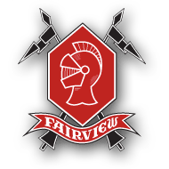

Data Analyst & Scientist, Artist, Video Game Enthusiast
Hello there!
My name is Georges Brunet and I’m an aspiring Data Scientist based in Niwot, Colorado. I love being able to tell a story with the help of numbers and so Data Science is the perfect intersection of creativity and mathematics. While I do enjoy working alone, I feel that the best insights are gathered through collaboration and that is why I love to work with people on Data Science projects.
I am a French native but I have lived and studied in different parts of the world. I moved away from France in 2003 and since then I have lived or studied in Carmel (Indiana), Millburn (New Jersey), Sao Paulo (Brazil), Cambridge (United Kingdom), Marbella (Spain), and Boulder (Colorado). I am currently living in Niwot, Colorado. I enjoy comedy and love the company of my friends and family. In my free time I like to make art, whether it be sculptures or paintings, watch sports, or my personal favorite: play video games.
I graduated from the University of Colorado, Boulder’s School of Arts & Sciences with a B.A. in Mathematics with a concentration in Applicability and Statistics in August 2019. Throughout my years at the university I worked as a Data Analytics Intern at Aspen Growth Ventures, a French Tutor at the French and Italian Department of the University of Colorado, Boulder, and as a Data Science Intern at Standard Alcohol, Inc.
Feel free to explore my website to learn more about the work that I have done and what my current projects are!
Certificates
Data Science Professional Certificate
Provides job-ready skills and techniques including data visualization, data analysis, machine learning, open source tools and libraries, methodologies, Python, databases, and SQL
Completed February 2020
College Education
University of Colorado, Boulder - College of Arts & Sciences
Bachelor of Arts in Mathematics, Concentration in Applicability and Statistics & French Minor
Completed and Graduated August 2019
High School Education

Fairview High School
Located in Southern Boulder, Colorado, I spent the rest of my senior year at this exceptional school.
Graduated in May 2015
Graded School
Located in Sao Paolo, Brazil, I spent the second semester of Sophomore year, Junior year and a portion of Senior year at this prestigious high school.
Millburn High School
Located in Millburn, New Jersey, I spent Freshman and the first semester of Sophomore year at this prestigious high school.
This is where I will post my work history and the work I am currently doing. This will be placed in a chronological order, so from my current stupid unemployment to the first internship I ever had. That's how it be sometimes.
Click on the companies' logos to see what position I held with them and explore the work I've done!
OctaneX Technologies Data Science Intern
From June 2018 to June 2019, I had the pleasure of working as a Data Science Intern at OctaneX Technologies, formerly known as Standard Alcohol at the time. I had numerous roles throughout my year there that each provided me with valuable experience and knowledge in a truly interesting industry.
As a Data Science Intern, my role included software engineering and architecture, database creation and management, product analysis and development, as well as analytic reports generation.
Department of French and Italian French Tutor
As a French Tutor at the university, I developed and implemented comprehensive lesson plans for students of lower and higher division levels.
From September 2016 to March 2018, I worked as a tutor at the Department of French and Italian at the University of Colorado, Boulder. I provided services to students of all levels, ranging from beginner levels to Master’s levels. As a French native who learned a few other languages growing up, I have a good sense of what commonalities in certain languages pose problems to speakers of languages with different grammatical structures. This motivated me to design level assessments for my students to measure their capabilities in French by topics and pinpoint the areas of improvement that aligned with the areas they wanted to improve. I also provided revisions to students’ papers and assisted them in developing their own voice in French in the form of writing.
Aspen Growth Ventures, LLC Data Analystics Intern
As a Data Analytics Intern, my role included database creation and management, product design and development, and data analytics.
This is where I will post past, present, and future projects I am working on. This is my most fun tab where I have all the fun fun fun FUN FUN!